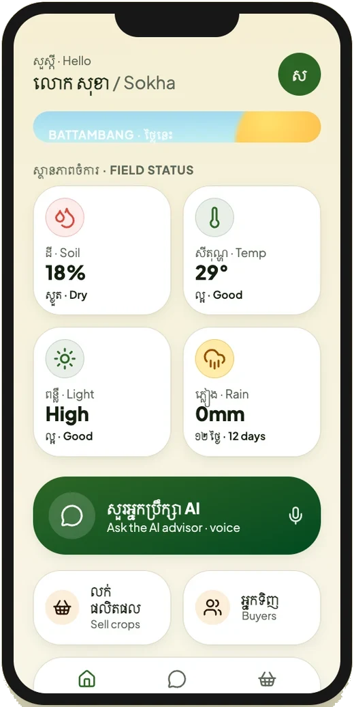
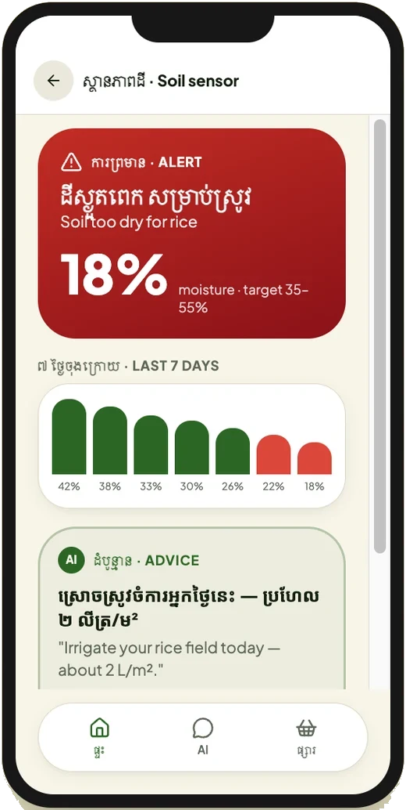
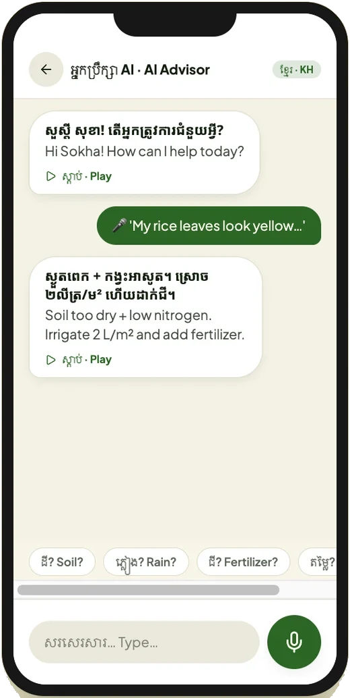
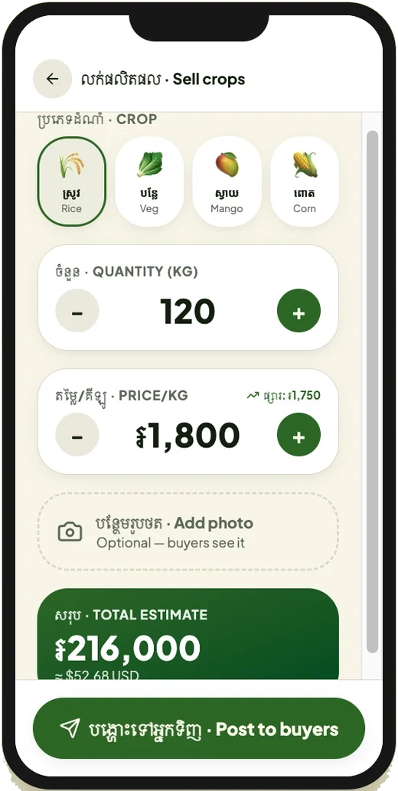
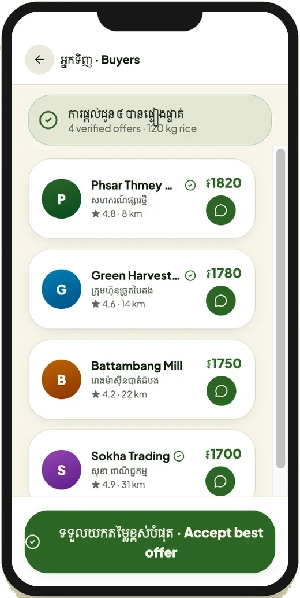

SIT223 Design thinking · Deakin
AgriSense Cambodia
A voice-first concept that turns farm sensor data into spoken advice in Khmer, for farmers who can't use a dashboard.

3
new layers on an existing IoT system
5
prototype screens
2
languages, Khmer first
01
The problem
Farm sensors can tell you when soil is too dry. But most IoT dashboards show graphs in English and assume you can read data.
- Many smallholder farmers in rural Cambodia can't use that kind of dashboard.
- Numbers alone don't tell a farmer what to do next.
- Farmers often sell through middlemen, with no direct way to reach buyers.
02
Where the idea came from
In 2022 I supported an agriculture hackathon program at Impact Hub Phnom Penh and saw these gaps up close.
For this unit, I extended DataBytes' Intelligent IoT Data Management project at Deakin, which already detects unusual sensor readings. My question: how would a farmer who can't read a graph actually use it?
03
The idea
- Simple dashboard: icons and colours in Khmer instead of graphs.
- Voice advisor: the farmer asks a question out loud in Khmer and gets clear advice back.
- Marketplace: list a crop and connect directly with verified buyers.
04
The prototype
Five screens, built as a clickable React prototype. Every label is in Khmer first, with English underneath.





Honest note: I generated the prototype with Lovable (an AI tool), then moved it into my fork of the DataBytes repo with Vite. It's a concept, not a tested product. I haven't put it in front of farmers yet.
05
How I planned it
- A Lean Canvas covering problem, users, solution and key metrics
- A Trello product plan with user stories and sprints
- A pitch video and a design thinking reflection
06
What I'd do next
- Test the voice advice with real farmers before building anything else.
- Connect the screens to live sensor data from the DataBytes system.
- Work with a UX designer. An AI tool got me started, but it isn't a substitute for good design.
Next project
Read more →